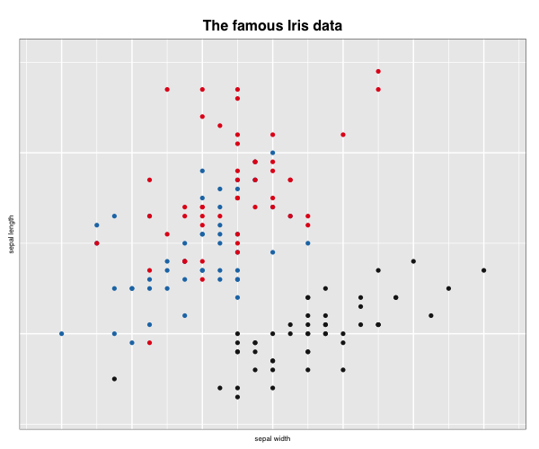
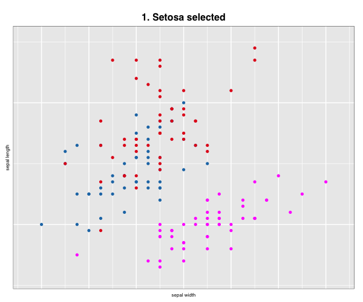
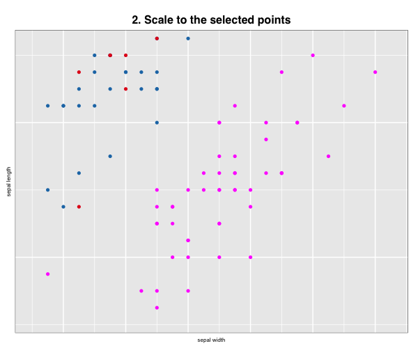
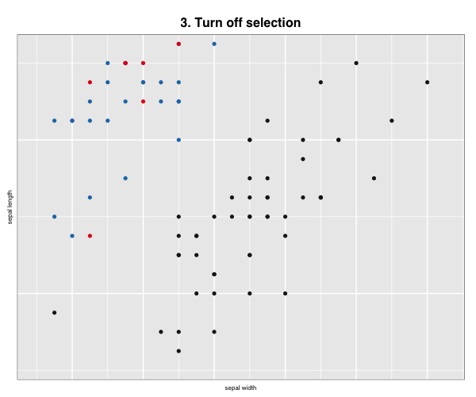

Loon in RMarkdown
R.W. Oldford
Rmarkdown.RmdLoon plots
Start by accessing loon
library(loon)Plots in loon are dynamic and interactive. Their display contents can be changed either through direct manipulation and the loon inspector, or programmatically. To interact with them programmatically (including transferring them to grid graphics objects), it is best to assign them to a variable at creation.
For example,
p <- l_plot(x = iris$Sepal.Width, y = iris$Sepal.Length, color = iris$Species,
xlabel = "sepal width", ylabel = "sepal length", title = "The famous Iris data",
showGuides = TRUE)
Just plot the loon plot!
This can now be printed and embedded in the document at any time using the plot() function as in
gp <- plot(p)
## gTree[GRID.gTree.1]In addition to displaying the plot as a grid graphic, the value of plot(p) is saved by setting it to the variable gp. The value is a very rich data structure (a gtree) which can now be used as any other grid graphics object (or grob). Note that the display could have been suppressed at this time simply as follows:
gp <- plot(p, draw = FALSE)
gp## gTree[GRID.gTree.2]Either way, gp is a grid data structure that can be manipulated as any other grob. Try grid::grid.ls(gp) or in RStudio View(gp) to examine the full data structure.
See plot.loon, grid.loon, and loonGrob for more details on transferring a loon plot to a grid graphics object.
Exporting to an image file
Being a grid graphics object, gp could also be exported to an image file of some kind using any of a variety of graphics devices (e.g. see ?png) or perhaps via RStudio’s “Export” plot functionality (to a “png” or “pdf” format).
For example, we could save gp as a “.png” file by drawing it using the png() device and grid.draw() from the grid graphics package.
The plot is now saved as a “png” file “loonplot1.png” in the “images” sub-directory of the current directory “.” (you could save it into any existing directory you choose and for which you have write privileges). Alternatively, if gp was not saved then plot(p) could have been used in place of the grid::grid.draw(gp) line above.
Once saved, this external image can be embedded in the document using knitr::include_graphics() as
knitr::include_graphics("images/loonplot1.png")
which will look slightly different because of the transfer of the grid graphic to “png”
Instead ofknitr, the same result (at least for pdf output documents) could be produced using the command \includegraphics from the LaTeX package graphicx.
One advantage of LaTeX over knitr commands is the control it allows over the display, especially of multiple plots. The disadvantage is that results might vary if the output is not a “pdf” file (e.g. an “html” file).
See also the png package.
Reading in previously saved states
We could also just save the relevant display states from one loon plot as an R data set (in an RDS file). This is done using the function l_saveStatesRDS().
Suppose, for example, suppose the previously constructed p contains valuable information in its display. We could save its states (l_info_states()) as follows:
# Having determined the colours you could save them (and other
# states) in a file of your choice, here some tempfile:
myFileName <- tempfile("myPlot", fileext = ".rds")
# We could save all of the 'usual' states (excludes certain
# 'basic' states, see help(l_saveStatesRDS))
l_saveStatesRDS(p, file = myFileName)
# Or simply save selected named states as an RDS
l_saveStatesRDS(p, states = c("color", "active", "selected"), file = myFileName)Having saved the desired states (not in a temporary file as above, but in some more permanent file), they can be retrieved later and used on a new plot (say in RMarkdown) to set the new plot’s values to those previously determined interactively.
# We have a new plot (or two)
p_new <- l_plot(iris, showGuides = TRUE)
h_new <- l_hist(iris$Sepal.Width, showBinHandle = FALSE, yshows = "density",
showStackedColors = TRUE)
# And read the saved data back in using R's readRDS() function
p_saved_info <- readRDS(myFileName)
# which is an object of class
class(p_saved_info)## [1] "l_savedStates"# The values on p_saved_info can now be all set using
# l_copyStates()
l_copyStates(source = p_saved_info, target = p_new)## NULLHaving assigned the saved states to the new plots, the new plots can be presented in the Rmarkdown document via plot().
plot(p_new)
plot(h_new)
Multiple views of a loon plot
Sometimes, there will be changes made to a single loon plot which you would like to capture in your document.
This might have been done interactively through direct manipulation, or programmatically.
Plots from programmatic manipulation
saveTitle <- p["title"]
p["title"] <- "1. Setosa selected"
p["selected"] <- iris$Species == "setosa"
gp_select <- plot(p, draw = FALSE)
p["title"] <- "2. Scale to the selected points"
l_scaleto_selected(p)
gp_select_zoom <- plot(p, draw = FALSE)
p["title"] <- "3. Turn off selection"
p["selected"] <- FALSE
gp_setosa_zoom <- plot(p, draw = FALSE)
# Put the plot back to how it was originally
p["title"] <- saveTitle
l_scaleto_plot(p)We now have three more “snapshots” of our interaction with the loon plot p.
We can now use the gridExtra package to arrange these in a single display.
library(gridExtra)
# which can now be arranged in sequence
grid.arrange(gp, gp_select, gp_select_zoom, gp_setosa_zoom)
Plots from saved exported images
Alternatively, all plots might have been developed through direct manipulation.
Any time a snapshot of the current plot is desired, it is simply turned to a grid object via plot(p) and saved as an external images (e.g. say as a png file) through the png() device, or the perhaps via RStudio’s export as “png” files. (N.B. Here we do it programmatically only to save the files.)
png(filename = "images/loonplot2.png", width = 600, height = 500)
grid::grid.draw(gp_select)
dev.off()
png(filename = "images/loonplot3.png", width = 600, height = 500)
grid::grid.draw(gp_select_zoom)
dev.off()
png(filename = "images/loonplot4.png", width = 600, height = 500)
grid::grid.draw(gp_setosa_zoom)
dev.off()For example, had the previous plots been saved as "loonplot2.png", "loonplot3.png", and "loonplot4.png" then knitr could produce them in sequence as before but now using fig.show = "hold" in the header for the following R segment:
knitr::include_graphics(path = "images/loonplot1.png")
knitr::include_graphics(path = "images/loonplot2.png")
knitr::include_graphics(path = "images/loonplot3.png")
knitr::include_graphics(path = "images/loonplot4.png")knitr::include_graphics(path = path_concat(imageDirectory, "loonplot1.png"))
knitr::include_graphics(path = path_concat(imageDirectory, "loonplot2.png"))
knitr::include_graphics(path = path_concat(imageDirectory, "loonplot3.png"))
knitr::include_graphics(path = path_concat(imageDirectory, "loonplot4.png"))
More layout control is available using grid graphics functions as.raster() and rasterGrob(), the function grid.arrange() from the gridExtra package, and readPNG() from the png package.
library(grid)
library(gridExtra)
library(png)
img <- as.raster(readPNG(source = "images/loonplot1.png"))
gp <- rasterGrob(img)
img <- as.raster(readPNG(source = "images/loonplot2.png"))
gp_select <- rasterGrob(img)
img <- as.raster(readPNG(source = "images/loonplot3.png"))
gp_select_zoom <- rasterGrob(img)
img <- as.raster(readPNG(source = "images/loonplot4.png"))
gp_setosa_zoom <- rasterGrob(img)
grid.arrange(gp, gp_select, gp_select_zoom, gp_setosa_zoom) Alternatively, LaTeX commands (like
Alternatively, LaTeX commands (like tabular layouts) could be used lay out the images.
See also ggsave in grid.